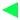
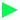

02. Oog oog old web better?
30/09/26
The guestbook is now live! Well, it was live a few days ago but I didn't want to make a post about it since it probably would have been just "guestbook is out. Go sign it!" A common issue I've faced when making new pages with the same layout is padding in the middle area. If it's too short the buttons look like they're popping out of nothing, and I'd rather fill the space than leave it empty.
Anyways do go sign it. I want to transform this site slowly into more of a personal space to hang out and do stuff and less of a portal to CTC and my bryce stuff. Of course CTC will still be the main focus, but I want to put other non-CTC related stuff on here too.
Also I'm really into the old web. Like I yearn for it. I close my eyes and I see gif borders and blinding bright colours and Times New Roman.
Though I do have something to confess. I don't want to date this site so I won't use the specific dreaded L word, but I'm not exactly deserving of nostalgia for the old web. However the stuff of now is garbage! So if I have the opportunity to make something I like, why not?
Sanctimonius gloating aside, the original idea I had for this site was for it to have a bunch of random redirects. Like more than there should be. Sort of like a B3313 thing. That would take a lot of time and would sort of be ruined by the page having a github repository, but it remains a really cool idea.
Maybe dd46rs.github.io can be a maze of website you get to from here.
All this talk of interconnected pages stems from a sweeet.com. I found out about it via an instagram repost of old sweeet wallpapers and I tried searching for the site on the Wayback machine. Sweeet is full of South Park content and is what I'm hoping to achieve with this site.
Though an interesting thing was that the site linked to other whole websites which were also dedicated South Park pages. A lot of sites too, like they were part of some collective.

Redirecting through an infinite stream of random South Park sites, each one brimming with charm and dedication, was quite the pleasent experience. Of course that's the work of a whole community spanning a few years but it's still inspirational.
So hopefully in the coming days, weeks, months, even years, this site will develop into something more than it is now. As of writing this I'm trying to make more animations. So far this site has three and they all feature Supreno, Jami and Martar, who are the sr64 mascots I guess. I'm making new characters for these newer animations. Also hopefully going to add sound.
If I keep working at it, I might just get good at it.
Thank you for reading. Have a great day :)
Anyways do go sign it. I want to transform this site slowly into more of a personal space to hang out and do stuff and less of a portal to CTC and my bryce stuff. Of course CTC will still be the main focus, but I want to put other non-CTC related stuff on here too.
Also I'm really into the old web. Like I yearn for it. I close my eyes and I see gif borders and blinding bright colours and Times New Roman.
Though I do have something to confess. I don't want to date this site so I won't use the specific dreaded L word, but I'm not exactly deserving of nostalgia for the old web. However the stuff of now is garbage! So if I have the opportunity to make something I like, why not?
Sanctimonius gloating aside, the original idea I had for this site was for it to have a bunch of random redirects. Like more than there should be. Sort of like a B3313 thing. That would take a lot of time and would sort of be ruined by the page having a github repository, but it remains a really cool idea.
Maybe dd46rs.github.io can be a maze of website you get to from here.
All this talk of interconnected pages stems from a sweeet.com. I found out about it via an instagram repost of old sweeet wallpapers and I tried searching for the site on the Wayback machine. Sweeet is full of South Park content and is what I'm hoping to achieve with this site.
Though an interesting thing was that the site linked to other whole websites which were also dedicated South Park pages. A lot of sites too, like they were part of some collective.
Redirecting through an infinite stream of random South Park sites, each one brimming with charm and dedication, was quite the pleasent experience. Of course that's the work of a whole community spanning a few years but it's still inspirational.
So hopefully in the coming days, weeks, months, even years, this site will develop into something more than it is now. As of writing this I'm trying to make more animations. So far this site has three and they all feature Supreno, Jami and Martar, who are the sr64 mascots I guess. I'm making new characters for these newer animations. Also hopefully going to add sound.
If I keep working at it, I might just get good at it.
Thank you for reading. Have a great day :)
Past Newsletters
Past newsletters will be listed here for your convenience! Beat's clicking the arrow a billion times.